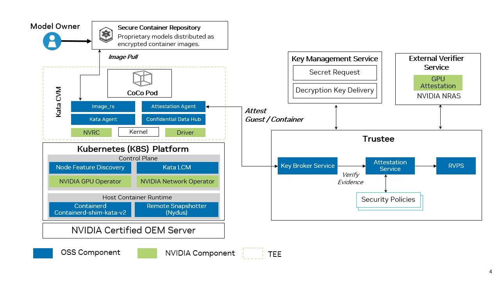
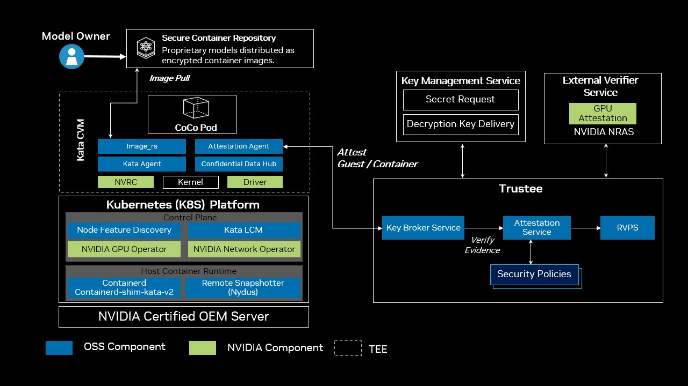

NVIDIA Confidential Containers Reference Architecture#
This documentation describes NVIDIA’s reference architecture for deploying CNCF Confidential Containers on compliant Confidential Computing hardware and software. For documentation navigation by role, refer to Personas.
Background#
NVIDIA GPUs power the training and deployment of Large Language Models (LLMs) that define the state of the art in AI reasoning and capability. As organizations adopt these models in regulated industries such as financial services, healthcare, and the public sector, protecting model intellectual property and sensitive user data becomes essential. The model deployment landscape is also evolving to include public clouds, enterprise on-premises, and edge. A zero-trust posture on cloud-native platforms such as Kubernetes is essential to secure assets (model IP and enterprise private data) from untrusted infrastructure with privileged user access.
Confidential Computing (CC) addresses this gap by using hardware-based Trusted Execution Environments (TEEs), such as AMD SEV-SNP and Intel TDX, with NVIDIA Confidential Computing capabilities to provide isolation, memory encryption, and integrity verification during processing. In addition to isolation, CC provides Remote Attestation, which allows workload owners to cryptographically verify the state of a TEE before providing secrets or sensitive data.
Confidential Containers (CoCo) is the cloud-native approach of CC on Kubernetes. The Confidential Containers project leverages Kata Containers to provide the sandboxing capabilities. Kata Containers is an open-source project that provides lightweight Utility Virtual Machines (UVMs) that feel and perform like containers while providing strong workload isolation. Along with the Confidential Containers project, Kata enables the orchestration of secure, GPU-accelerated workloads in Kubernetes.
Use Cases#
The target for Confidential Containers is to enable model providers (closed and open source) and Enterprises to use the advancements of Gen AI, agnostic to the deployment model (Cloud, Enterprise, or Edge).
For Model Providers: It enables the expansion of reach by allowing expensive, proprietary model weights to be deployed on-site at customer data centers without exposing the intellectual property (IP) to the customer’s infrastructure administrators.
For Adopters: It provides low-latency access to state-of-the-art frontier models within their own sovereign environment, ensuring their private prompts and data never leave their controlled premises while maintaining the security of the model provider’s IP.
Some of the key use cases that CC and Confidential Containers enable are:
Zero-Trust AI and IP Protection: You can deploy proprietary models (such as LLMs) on third-party or private infrastructure. The model weights remain encrypted and are only decrypted inside the hardware-protected enclave, ensuring absolute IP protection from the host.
Data Clean Rooms: This allows you to process sensitive enterprise data (such as financial analytics or healthcare records) securely. Neither the infrastructure provider nor the model builder can see the raw data.

Sample Workflow for Securing Model IP on Untrusted Infrastructure with CoCo
Architecture Overview#
Integrating open source and NVIDIA software components with the Confidential Computing capabilities of NVIDIA GPUs, this reference architecture is designed to be the secure and trusted deployment model for AI workloads.
The key values of this architecture approach are:
Built on Open Source Software (OSS) standards: this reference architecture is built on key OSS components such as Kata, Trustee, QEMU, OVMF, and Node Feature Discovery (NFD), along with NVIDIA components such as the NVIDIA GPU Operator.
Highest level of isolation: the Confidential Containers architecture is built on Kata containers, the industry standard for providing hardened sandbox isolation, and augmenting it with support for GPU passthrough to Kata containers makes the base of the Trusted Execution Environment (TEE).
Zero-trust execution with attestation: ensuring the trust of the model providers/data owners by providing a full-stack verification capability with attestation. The integration of NVIDIA GPU attestation capabilities with Trustee based architecture, to provide composite attestation provides the base for secure, attestation based key-release for encrypted workloads, deployed inside the TEE.


High-Level Reference Architecture for Confidential Containers
The above diagram shows the high-level reference architecture for Confidential Containers and the key components that are used to deploy and manage Confidential Containers workloads. The components are described in more detail in the next section.
Software Components for Confidential Containers#
The following is a brief overview of the software components in NVIDIA’s Reference Architecture for Confidential Containers. Refer to the diagram above for a visual representation of the components.
Kata Containers
Acts as the secure isolation layer by running standard Kubernetes Pods inside lightweight, hardware-isolated Utility Virtual Machines (UVMs) rather than sharing the untrusted host kernel. Kata Containers is an open source project, which is integrated with the Kubernetes Agent Sandbox project, that delivers sandboxing capabilities.
Kata Deploy
Deployment mechanism (often managed with Helm) that installs the Kata runtime binaries, UVM images and kernels, and TEE-specific shims (such as kata-qemu-nvidia-gpu-snp or kata-qemu-nvidia-gpu-tdx) onto the cluster’s worker nodes.
Refer to the Kata Containers documentation for more information.
NVIDIA GPU Operator
Automates GPU lifecycle management. For Confidential Containers, it securely provisions GPU support and handles VFIO-based GPU passthrough directly into the Kata confidential Virtual Machine (VM) without breaking the hardware trust boundary.
The GPU Operator deploys the components needed to run Confidential Containers to simplify managing the software required for confidential computing, managing the Confidential Computing mode on GPUs, and deploying confidential container workloads. The GPU Operator uses node labels to manage the deployment of components to the nodes in your cluster that should run Confidential Containers. These components include:
NVIDIA Confidential Computing Manager (cc-manager) for Kubernetes: Sets the confidential computing (CC) mode on the NVIDIA GPUs. By default, the Confidential Computing Manager will transition all NVIDIA GPUs to Confidential Computing mode, if they are not already in that mode.
NVIDIA Kata Sandbox Device Plugin: Creates host-side Container Device Interface (CDI) specifications for GPU passthrough and discovers NVIDIA GPUs along with their capabilities, advertises these to Kubernetes, and allocates GPUs during pod deployment. Allocatable GPU resources are advertised as type
nvidia.com/pgpuby default.NVIDIA VFIO Manager: Binds discovered NVIDIA GPUs and NVSwitches to the vfio-pci driver for VFIO passthrough.
Refer to the NVIDIA GPU Operator documentation for more information on the NVIDIA GPU Operator or the GPU Operator Cluster Topology Considerations section for more information on selecting nodes for Confidential Containers.
Node Feature Discovery (NFD)
Bootstraps the node by advertising the node features using labels to make sophisticated scheduling decisions, such as installing the Kata/CoCo stack only on the nodes that support the CC prerequisites for CPU and GPU. This directs the Operator to install node feature rules that detect CPU security features and the NVIDIA GPU hardware.
Refer to the Node Feature Discovery documentation for upstream usage and reference material. The project source repository is kubernetes-sigs/node-feature-discovery on GitHub. This component is typically deployed and managed by default by the GPU Operator.
Snapshotter (for example, Nydus)
Handles the container image “guest pull” functionality. Used as a remote snapshotter, it bypasses image pulls on the host. Instead, the snapshotter fetches and unpacks encrypted and signed container images directly inside the protected guest memory, keeping proprietary contents hidden and ensuring image integrity.
Kata Agent and Agent Security Policy
Runs inside the guest VM to manage the container lifecycle while enforcing a strict, immutable agent security policy based on Rego (regorus).
This blocks the untrusted host from executing unauthorized commands, such as a malicious kubectl exec.
Trustee and Attestation Service
Attestation and key brokering framework (which includes the Key Broker Service and Attestation Service). It acts as the cryptographic gatekeeper, verifying hardware/software evidence and only releasing secrets if the environment is proven secure.
Confidential Data Hub (CDH)
An in-guest component that securely receives sealed secrets from Trustee and transparently manages encrypted persistent storage and image decryption for the workload.
NVIDIA Runtime Container (NVRC)
A minimal hardened init system that securely bootstraps the guest environment, life cycles the kata-agent, provides health checks on started helper daemons while drastically reducing the attack surface.
GPU Operator Cluster Topology Considerations#
The GPU Operator deploys and manages components for allocating and utilizing the GPU resources on your cluster. Depending on how you configure the Operator, different components are deployed on the worker nodes. When setting up Confidential Containers support, you can configure all the worker nodes in your cluster for running GPU workloads with Confidential Containers, or you can configure some nodes for Confidential Containers and the others for traditional containers. This configuration is done through node labelling and configuration flags set during installation or by editing the ClusterPolicy object post installation.
Consider the following example where node A is configured to run traditional containers and node B is configured to run confidential containers.
Node A - Traditional Container nodes receive the following software components |
Node B - Confidential Container nodes receive the following software components |
|---|---|
|
|
This configuration can be controlled through node labelling, as described in Detailed Install Guide.
Supported Features and Deployment Scenarios#
The following features are supported with Confidential Containers:
Support for Confidential Container workloads as
Single-GPU passthrough (one physical GPU per pod).
Multi-GPU passthrough on NVSwitch (NVLink) based HGX systems.
Note
For both single and multi GPU Passthrough, all GPUs on the host must be configured for Confidential Computing. For multi-GPU passthrough, all GPUs must be assigned to one Confidential Container virtual machine. Configuring only some GPUs on a node for Confidential Computing is not supported.
Composite attestation using Trustee and the NVIDIA Remote Attestation Service (NRAS).
Generating Kata Agent Security Policies using the genpolicy tool.
Use of signed sealed secrets.
Access to authenticated registries for container image guest-pull.
Container image signature verification and encrypted container images.
Ephemeral container data and image layer storage.
Lifecycle management of Kata Containers through the Kata Lifecycle Manager.
More information on these features can be found in the Confidential Containers documentation.
Limitations and Restrictions#
NVIDIA supports the GPU Operator and confidential computing with the containerd runtime only.
All GPUs on the host must be configured for Confidential Computing. Configuring only a subset of GPUs on a node is not supported. For multi-GPU passthrough, all GPUs must be assigned to a single confidential VM.
Nested virtualization is not supported. Confidential Containers provides its own virtualization based on Kata Containers and must be installed directly on the host, not within a guest VM.
PCI peer-to-peer (P2P) DMA is unsupported because IOMMUFD does not yet support mapping hardware PCI BAR regions. When a GPU is assigned as a VFIO PCI device, QEMU logs the following warnings at VM startup for each assigned device. This is expected behavior and does not affect GPU functionality.
qemu-system-x86_64: warning: IOMMU_IOAS_MAP failed: Bad address, PCI BAR? qemu-system-x86_64: vfio_container_dma_map(0x560cb6cb1620, 0xe000000021000, 0x3000, 0x7f32ed55c000) = -14 (Bad address)
Refer to the QEMU IOMMUFD documentation for more information.
Security Considerations#
Application security defects: Confidential Computing does not protect against threats within the confidential VM, including vulnerabilities in the application itself. Applications must still follow security best practices such as input validation.
Control plane: Confidential Containers provides protections to limit the influence of the Kubernetes control plane. However, applications may expose themselves to attack if they rely on control-plane-managed configuration.
Environment variables and ConfigMaps: Unless provisioned as sealed secrets using Trustee, orchestrator-provided environment variables and ConfigMaps remain untrusted and susceptible to manipulation.
Storage and volume mounts: Manipulating volume mounts can expose the workload to malicious untrusted host storage or deny access to required persistent data.
Physical attacks: Confidential Computing considers most physical attacks out of scope. Kubernetes hosts should be in physically secure datacenters.
Availability: Confidential Computing does not provide availability guarantees. Achieve availability through replication, which is standard practice in Kubernetes deployments.
Next Steps#
To deploy on your cluster, start with the Install section:
Hardware, OS, and component versions validated for general availability (GA).
Prepare worker nodes and the Kubernetes cluster.
Install Kata Containers and the NVIDIA GPU Operator on Kubernetes.
Verify the deployment; success is Test PASSED in pod logs.
After installation, refer to the Configuration section for workload configuration, CC mode management, and attestation.